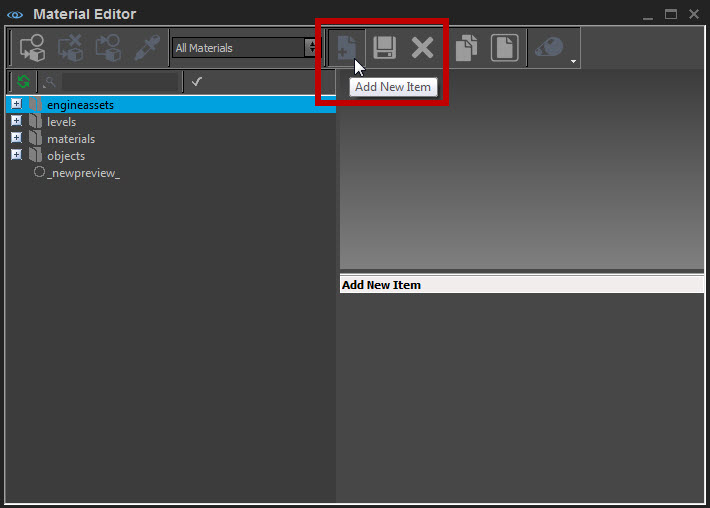
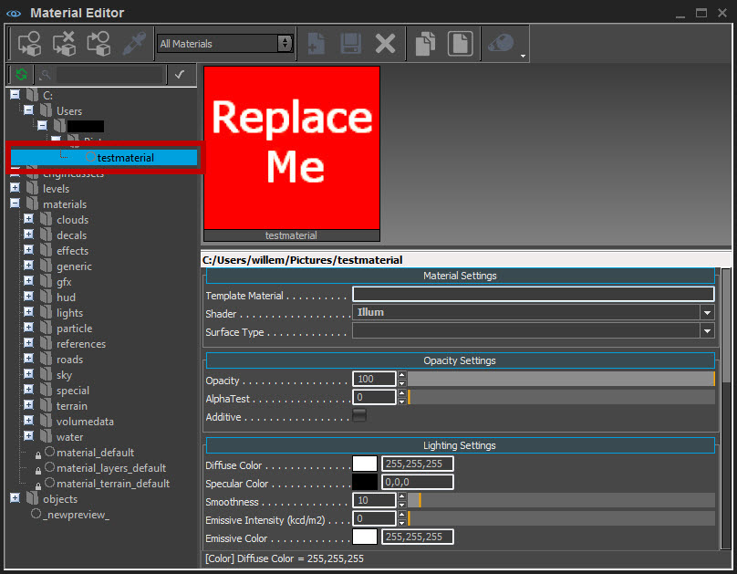
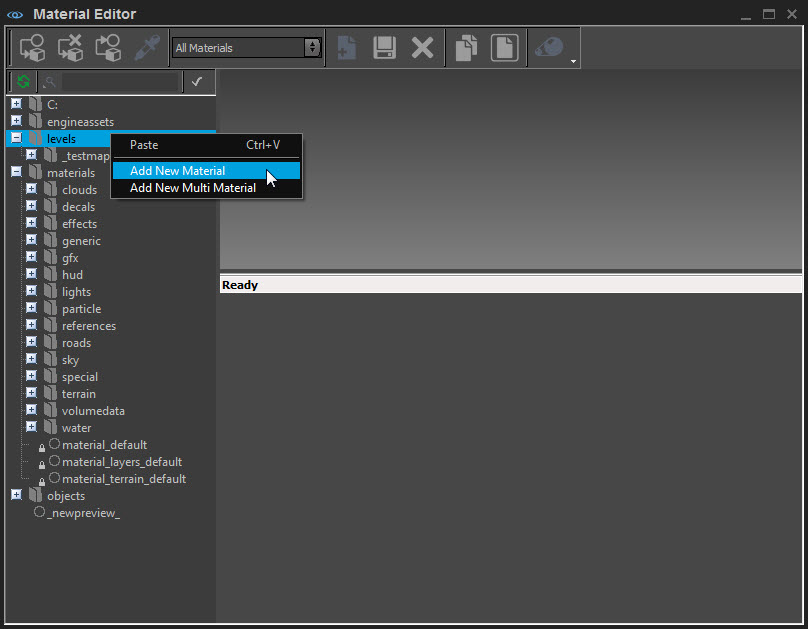
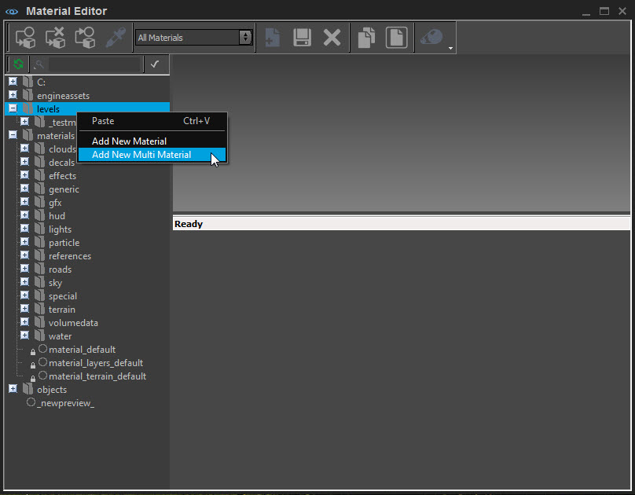
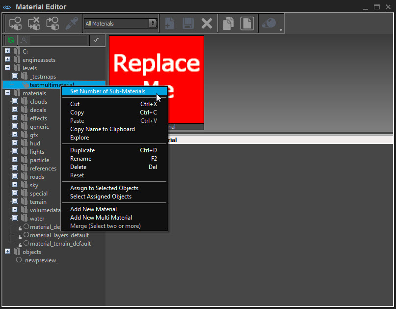
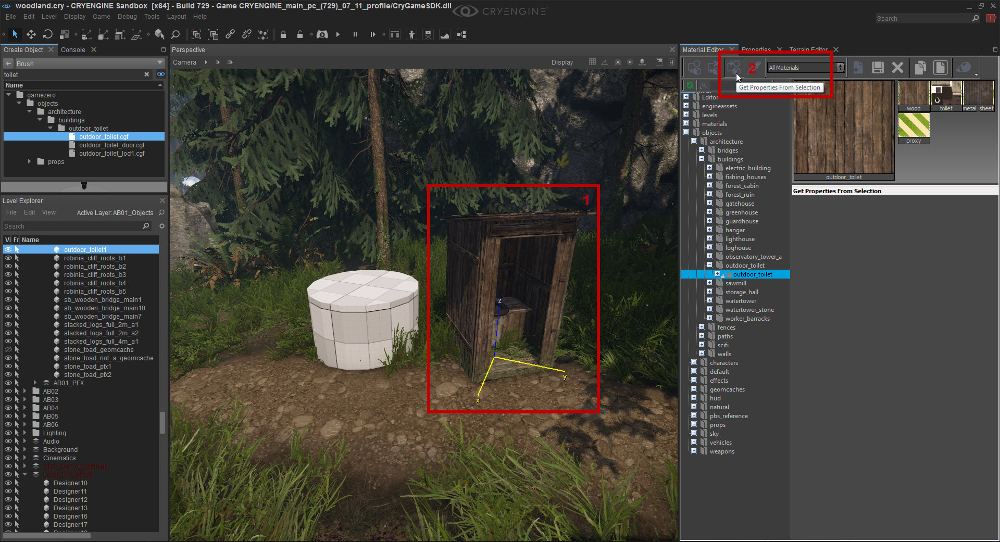
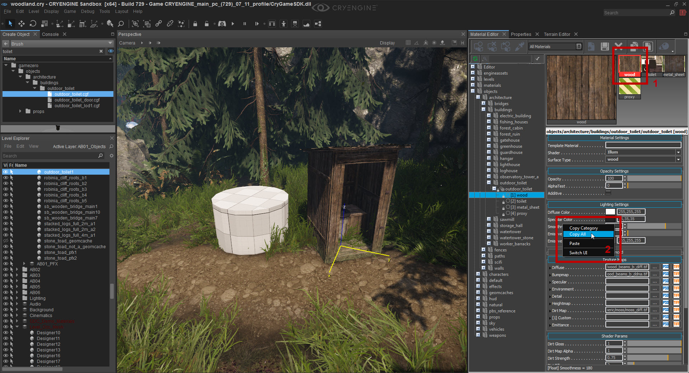
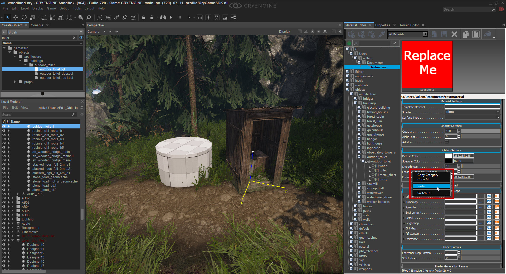
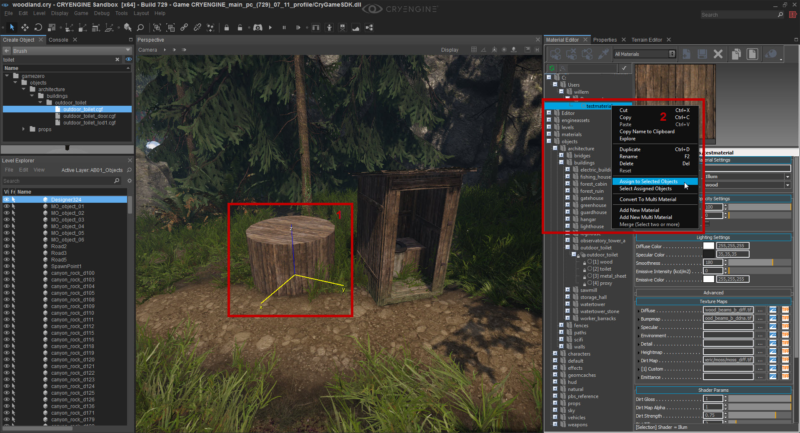

Overview
The Material Editor is used to interact with and modify materials that have been created in a Digital Content Creation (DCC) tool. You can apply textures to various types of objects and terrain. You can also apply shaders and adjust Material parameters and properties with the Material Editor.
This tutorial covers the basic steps of creating new materials, browsing for materials, and takes a brief look at the material settings window.
Creating a New Material
Create a new material by clicking the Add New Item button:

Pic1: Add New Item button
Save the material in your desired folder. After saving the new material (In this example, it has been saved as "testmaterial"), the material will be added to the material browser:

Pic2: Material added to the material browser
You can also add a material by right-clicking the folder in the Material Editor you want to add it to. A context menu will be displayed, where you can select Add New Material:

Pic3: Add New Material in context menu
Creating a New Multi-Material
If you want to have a material with more than one material ID, you have to create a multi-material.
To create a multi-material, right-click the the folder in the Material Editor you want to add it to and select Add New Multi-Material:

Pic4: Add New Multi-Material option
You now have to set the number of Sub Materials/Material IDs that you want to have.
Right-click the material that you created and select Set Number of Sub Materials:

Pic5: Set Number of Sub Materials option
You can set the numbers of material IDs by pressing the arrows or by typing in the desired number.
Copying an Existing Material
Let's assume you have an existing material, or a sub-material that you want to copy to another material. The Material Editor allows for a simple copy/paste routine to achieve this.
Start by selecting the material which you want to copy.
If you want to copy a specific material from a certain object or brush, you can select that object or brush (1) and click the Get Properties from Selection button (2):

Pic6: Get Properties from Selection button
The object will then be selected in the Material Editor and when you expand it, all the materials used for that object will be shown as below.
This way, you can make sure you get the exact material that you want.
Let's assume we want to copy the Wood material used in this outdoor toilet.
Select the Wood material (1) and right-click on one of the parameters to bring up the context menu (2). Now select Copy All:

Pic7: Copy All option
With the data from the material copied, now select your material (the "testmaterial" we created earlier) which you want to paste the data into.
Similar to before, right-click over the parameters of your material to open the context menu and this time select Paste:

Pic8: Pasting copied parameters to new material
If you now select a different object (in our example the cylinder on the left) (1), right-click on your material and choose Assign to Selected Objects (2), you should see those parameters copied over and visible on this object:

Pic9: Parameters copied over to new material
When you Paste the content, it's worthwhile pasting it twice as a glitch can sometimes occur where only certain information is copied on the first go and requires a second paste for the additional content.
You can also use the Copy Category function to copy individual categories such as the Lighting Settings or Texture Maps categories if you only wish to copy specific content from one material to another while keeping the other content untouched.